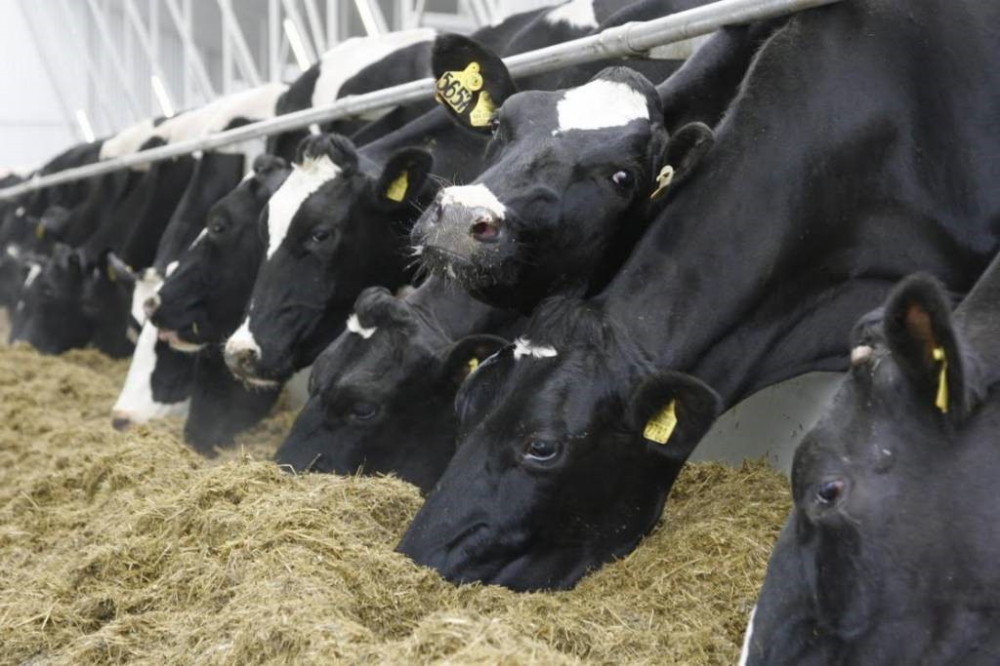
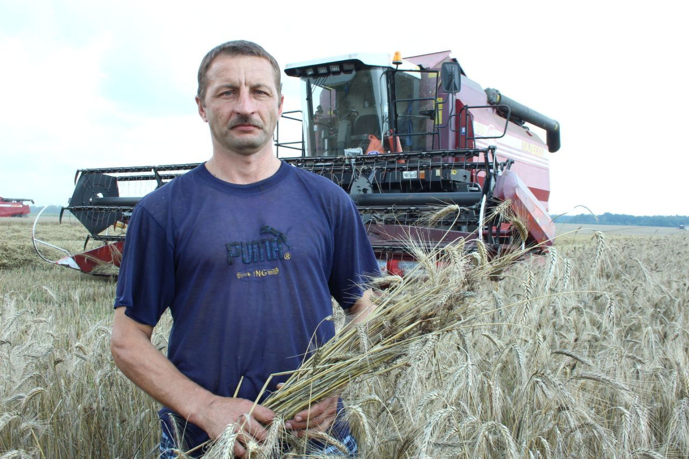

Животноводство
Животноводство имеет мясомолочное направление. В хозяйстве 12 животноводческих ферм и комплексов: 9 крупного рогатого скота, птицекомплекс, зверохозяйство и конеферма.
В КСУП «Субботники» содержатся 4475 голов крупного рогатого скота (КРС) в том числе 1564 голов дойного стада. Размещены животные на одном молочно-товарном комплексе и трех фермах. Среднесуточный привес на выращивании и откорме КРС составляет 630 г. Удой молока в расчете на одну корову в последние годы 3500 – 3700 кг., а его рентабельность 17 – 21%.
Растениеводство
Площадь сельскохозяйственных угодий составляет 9384 га. из них 7058 га. занимает пашня, сенокосы и пастбища – 2264 га.
Основная задача растениеводства – обеспечение животноводства собственными кормами.
Внедряются перспективные сорта сельскохозяйственных культур и современные технологии по выращиванию зерновых и кормовых культур с учетом новых достижений отечественной и зарубежной науки и европейского передового опыта. Урожайность зерновых 30 – 35 ц. с гектара, валовый сбор 10 000 – 12 000 кг., сахарной свеклы 350 – 500 ц. с гектара, валовый сбор 12 000 кг.
В хозяйстве работают 44 трактора, 29 тракторных прицепов, 7 сеялок, 5 опрыскивателей, 6 комбинированных почвообрабатывающих агрегатов, 24 грузовых автомобиля, 12 зерноуборочных комбайна, 4 кормоуборочных комбайна в том числе 1 комбайн «Ягуар-870», 1 свеклоуборочный комбайн «Франц кляйне» и др. сельскохозяйственная техника.

